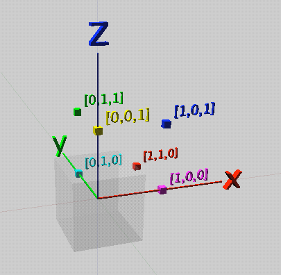

Acumen is an experimental modeling and simulation environment for hybrid systems. It is built around a small, textual modeling language. This document is a reference manual for the key features of the environment and the language.
The most up-to-date version of this manual is available at http://bit.ly/Acumen-manual.
Please report any bugs with Acumen or this document by using the online form available at: http://www.acumen-language.org/p/report-bug.html.
The standard mode for using the Acumen environment is through the GUI, which makes it possible to:
There is also a command line interface intended for advanced users. Documentation for this mode can be found by invoking Acumen from the command line.
An Acumen model consists of a series of class declarations. A model must contain a declaration for a class called Main. The declaration of the Main class must have exactly one parameter. By convention, that parameter is called simulator. For example, a typical model would have this form:
class Ball (mass, size)
// Body of declaration of class Ball
end
class Main (simulator)
// Body of declaration of class Main
end
The remainder of any line after the keyword // is ignored, and treated as a comment. Similarly, any text that starts with /* and ends with */ is also a comment.
Class declarations may appear in any order.
Class declarations start with a name for the class and a list of formal parameters. After the name and parameters, the class declaration can contain a private section. An example is as follows:
class Ball (mass, size)
private
x_position := 0;
y_position := 0
end;
// Rest of the body of declaration of class Ball
end
Private sections define the initial value for the variables introduced in this section. Parameter variables can be used in the definition of these initial values. Both parameter variables and private variables can be used in the rest of the body of the class declaration. Variables introduced in this section cannot be referenced in the section itself.
Within a class declaration, it is possible to instantiate objects of another class. This can be done in either the private section or in the rest of the body. When done in the private section, it is called a ‘static’ instance, and when in the body, a ‘dynamic’ instance.
class Main (simulator)
private
b := create Ball (5, 14); // Static instance
end
// First part of class definition
create Ball (10, 42); // Dynamic instance
// Last part of class definition
end
New users will find it easier to work with static instances, since creating dynamic instances requires more care.
Acumen expressions can be built out of variables, literals, built-in operators, vector generators, and summations.
In Acumen, a variable name is a sequence of one or more characters starting with a letter or an underscore, and thereafter possibly including digits. Examples of variables include a, A, red_robin, and marco42.
As a convention, variable names used in the language in a special way usually start with an underscore (_). An example is the special variable _3D.
Variables
A variable has a name followed by zero or more apostrophes (’). Such apostrophes indicate that this variable is the time derivative of a variable with the apostrophe removed. Examples of such variables include x’, x’’, and x’’’.
Acumen supports literal values of different types, including booleans (true and false), integers (1, 2, 3, etc.), decimal values (1.2, 1.3, etc), floating point numbers (1.2E-17, 1.3E14, etc.), strings ("rabbit", "ringo", etc.), and vector values ([1,2,3], [true, false, false], ["a", "ab", "abc"], etc.).
The special constants, pi and children are also literals.
Vectors can be generated by specifying a starting value, step size, and ending value. This is written as start:step:end. For example, 4:2:8 generates [4,6,8]. We can omit the step if it is 1, and write start:end. For example, 4:8 generates [4,5,6,7,8].
It is possible to iterate over collections to compute the summation of a series of values. The following example illustrates the syntax for this operation:
sum i*i for i=1:10 if i%2 == 0
Thus the construct allows us to indicate a range for iterating over and to filter the values we are adding based on a condition. The if clause can be omitted when the intention is that the condition is always true
There are five types of statements in Acumen, namely: continuous assignments, conditional (or guarded) statements, discrete assignments, iteration, and sequences of statements.
A continuous assignment has a left-hand side that must be a variable or the derivative of a variable, and a right-hand side that can be any expression. Examples include the following:
a = f/m
x’’ = -9.8
Any such statements in the same object are evaluated simultaneously after all discrete assignments have been performed and have stabilized.
If-statements are the first type of conditional statement. They allow us to express that different statements take effect under different conditions. The following code illustrates how if-statements are written:
if (x>0)
x’’ = -9.8
else
x’ = 0
end
In this example, as long as x is greater than zero then the first equation is in effect. The result will be that the x’ is decreasing, and when it becomes negative, x will also decrease until the condition is no longer true. Once that happens, the second equation will take effect, which will cause x to remain constant.
A switch/case-statement is the second type of conditional statement. It can be viewed as a more general type than an if-statement. It allows us to enable different statements under multiple different cases depending on the value of a particular expression that we are switching on. The following example illustrates this idea:
switch my_command
case "Fall"
x’’ = -9.8
case "Freeze"
x’ = 0
case "Reset"
x = 0
end
Only one case is enabled at any one point in time.
A discrete assignment has a left hand side that must be a variable or the derivative of a variable, and a right hand side that can be any expression. Examples include the following statements:
t := 0
t’ := 1
t’’ := 0
Discrete assignments represent an instantaneous change in values. They are used in the private section of classes, where the initial values for variables are specified. They can also be used to indicate that there is a discontinuous change (hence the name “discrete”) to a particular variable during a simulation.
For simulation to behave properly, any discrete assignment in the body of a class definition (that is, outside the private section) should occur inside a conditional statement (such as an if-statement or a switch statement). The following example illustrates an acceptable use of discrete assignments:
if (x>=0)
x’’ = -9.8
else
if (x<=0 && x’<0)
x’ := - 0.5 * x’
end
Here, the value of x’ is reset to change direction (the negative sign) and reduce magnitude (multiplication by 0.5) to model a “bounce” when a “ball” of height x hits the ground at level 0. Note that as soon as the assignment happens, the condition is falsified, so the discrete assignment is enabled for exactly one time instant. Furthermore, because the condition requires that x’ is negative, the new x’ must be positive; therefore, we can also expect that the condition on the first line will become true, and the “ball” will again be subject to a downward acceleration (which can be seen as modeling the effect of gravity).
For-statements allow us to perform iteration. Examples include:
for i=1:10 x=2*y end
and
for c=children c.x := 15
The second type of iteration illustrates how an object can assign a value to the x field of all its children.
Multiple simultaneous statements can be expressed in a collection by simply placing a semi-colon (;) between them. For example:
x’’ = -9.8,
y’’ = 0;
Order is irrelevant in such statements, as they are always evaluated simultaneously.
Initially, the simulation of an Acumen model has only one object, Main. As objects are created dynamically, a tree of objects is formed. Main is always the root of this tree. The children of an object are the objects created by that object.
Every “simulation step” involves a traversal of the entire tree starting from Main. First, the tree is traversed to perform any discrete actions. In the discrete phase, sequences of discrete actions are performed in parallel. So, for example, x:=y; y:=x is a swap operation. For every object, first the actions of each parent are executed, and then the actions of all children are executed. This is applied recursively until we get to an object which has no children. During the traversal, if no actions change the state, or if there are no actions, we move to the next step. Otherwise, we can move to the continuous phase. In the continuous phase, all continuous assignments and integration steps are performed.
Acumen has a _3D panel that can be used to create static or dynamic visualizations in 3D. In what follows we introduce the constructs needed to use this functionality.
All 3D objects must have a color. Colors are described by a three-dimensional intensity representing the red-green-blue (RGB) dimensions of the colors. The color is represented by a vector of the form [r,g,b]. The following display illustrates some basic examples of RGB combinations:
It is important to note here that the colors indicate intensities, and NOT coordinates. The fact that both are represented as a triple (that is, a vector is size three) is coincidental. Intensity values in each color dimension should be between 0 and 1.
Acumen’s _3D panel display uses a right-hand coordinate system, which is illustrated by the following image from the Wikipedia article on the Cartesian Coordinate System:
The following example illustrates the coordinate system and some examples of points in that system. Each point is marked by a small cube, and next to it is text indicating the [x,y,z] coordinate of that point:

Note that, unlike in the case of the color illustration above, the triples here are coordinates in three dimensional space, and not color intensities.
Text can be displayed in the _3D panel using a command such as the following:
_3D :=
[["Text", // Type of _3D object
[-2.2,0,0], // Starting point in [x,y,z] form
0.75, // Font size
[1,1,0], // Color in red-green-blue (RGB) intensity
[pi/2,0,0], // Orientation (pi/2 around x-axis)
"Hello Acumen!"]]; // Text you wish to display
Note that the starting point is where the text starts (the leftmost point of the displayed text), and not the center of where the text is displayed.
Orientations are angles that indicate how the text should be rotated around the x-, y-, and z-axis, respectively. Rotations are measured in radians, and specify an anti-clockwise rotation. Orientation rotations can be interpreted as rotations around the global frame of reference with the origin relocated to the reference point of the object that we are rotating; they can also be interpreted as having the rotation around the x-axis done first, then the y-axis, then the z-axis.
A box can be displayed in the _3D panel using a command such as follows:
_3D :=
[["Box", // Type of _3D object
[0,0,0], // Center point
[0.2,1,3], // Size in [x,y,z] form
[1,0,0], // Color
[0,0,0]]]; // Orientation
Note that, unlike text, boxes and the other geometric objects use the point indicated in the _3D statement to represent the center point rather than one of the corner point.
A cylinder can be displayed as follows:
_3D :=
[["Cylinder",// Type of _3D object
[0,0,0], // Center point
[0.1,4], // Size in [radius,length] form
[1,1,0], // Color
[0,0,0]]]; // Orientation
Unlike a box, a cylinder only has two parameters to specify its dimensions, namely, radius and length.
A cone can be drawn as follows:
_3D :=
[["Cone",
[0,0,0], // Center point
[0.4,1.0], // Size in [radius, height] for
[1,0,1], // Color
[pi/2,0,0]]] // Orientation
Note the similarity between the parameters for the cone and cylinder. The parameter types are the same, but they have a different meaning depending on the shape.
All the display commands illustrated above can be combined by adding a comma separator and inserting multiple commands inside the outer brackets. For example, the following command illustrates the effect of the orientation parameter:
_3D :=
[["Text",[-2,0,0],1,[1,0,0],[0,0,0],"X"],
["Text",[-2,0,0],1,[0,1,0],[pi/4,0,0],"2"],
["Text",[-2,0,0],1,[0,0,1],[pi/2,0,0],"3"],
["Text",[ 0,0,0],1,[1,0,0],[pi/2,0,0],"Y"],
["Text",[ 0,0,0],1,[0,1,0],[pi/2,pi/4,0],"2"],
["Text",[ 0,0,0],1,[0,0,1],[pi/2,pi/2,0],"3"],
["Text",[ 2,0,0],1,[1,0,0],[pi/2,pi/2,0],"Z"],
["Text",[ 2,0,0],1,[0,1,0],[pi/2,pi/2,pi/4],"2"],
["Text",[ 2,0,0],1,[0,0,1],[pi/2,pi/2,pi/2],"3"]];
This example shows how to combine multiple text objects, but the list can contain combinations of different object types.
In the examples above we simply assigned an initial value to the _3D field in the private section in the current object. In fact, it is also possible to continuously assign a changing value to the _3D parameter. When this is done, the _3D panel animates the progression of this three dimensional scene seen through the simulation time.
Acumen provides the following built-in functions:
In most cases, operators that start with a letter are prefix operators that take explicit arguments, such as the case with sin(x), while operators that start with a symbol are infix operators, such as x+y. The only exception to this rule is xor, which is an infix operator.
The precedence ordering for built-in operators in Acumen is as follows:
The simulator parameter to the Main class provides the user with a mechanism to codify how the model should be simulated, as part of the model itself. There are three parameters that the user can specify:
It is generally recommended that any adjustments to these values are made using a discrete assignment at the very start the the simulation time.
Acumen is actively used for several research projects, and is often extended with experimental features. It is a general goal that such features should not interfere with the basic functionality described above. However, this cannot always be guaranteed. Experimental features that are not described in this manual include: bit-level operations, interval values, and object termination/reparenting.
This manual was prepared by Walid Taha. It was edited by Mark Stephens. Valuable technical assistance was provided by Kevin Atkinson, Adam Duracz, Viktor Vasilev, and Yingfu Zeng. Support for the development of Acumen and this manual was provided by the US National Science Foundation (NSF) Cyber-Physical Systems (CPS) project #1136099, by the Swedish Knowledge Foundation (KK), and by Halmstad University.